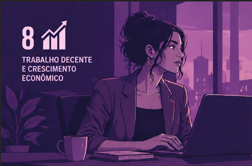
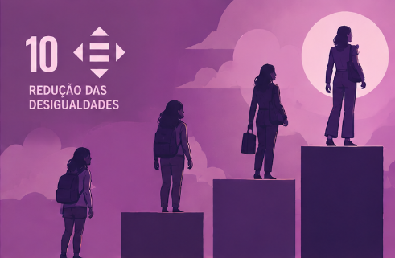
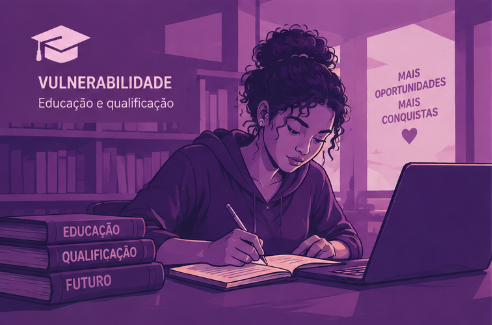
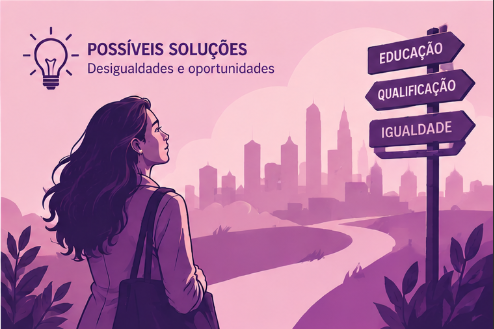
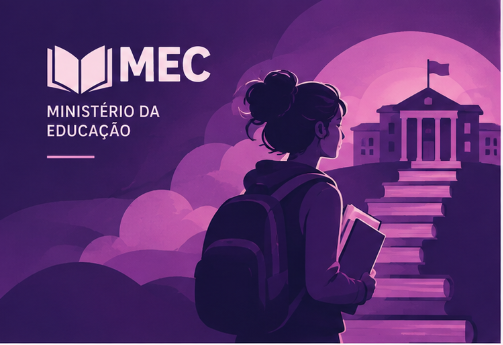
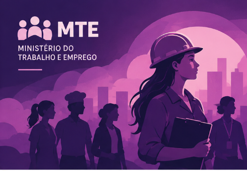
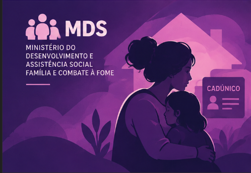
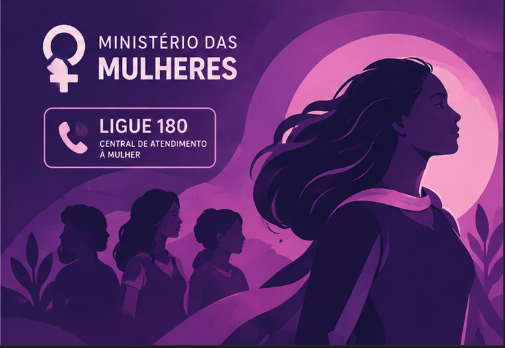

ODS 8
Trabalho Decente
A ODS 8 busca promover o crescimento econômico inclusivo, o emprego pleno e produtivo e o trabalho decente para todas as pessoas. Para o nosso projeto, ela representa o direito de mulheres terem acesso a empregos seguros, dignos, justamente remunerados e com oportunidades reais de crescimento.

ODS 10
Redução das Desigualdades
A ODS 10 busca reduzir as desigualdades dentro da sociedade. Quando fatores como pobreza, gênero, raça e falta de acesso a oportunidades se cruzam, algumas mulheres podem enfrentar barreiras ainda maiores para entrar e permanecer no mercado de trabalho.
Em nossa Feira Tecnológica, escolhemos abordar um problema que ainda faz parte da realidade de muitas mulheres: a dificuldade de acesso a oportunidades de trabalho e à independência financeira. Nosso projeto parte de duas das Objetivos de Desenvolvimento Sustentável (ODS) da ONU:
- ODS 8 — Trabalho Decente e Crescimento Econômico
- ODS 10 — Redução das Desigualdades.

Vulnerabilidade
Educação e qualificação
A falta de acesso à educação e à qualificação profissional pode limitar as possibilidades de inserção no mercado de trabalho. Para mulheres em situação de vulnerabilidade econômica, a falta de oportunidades pode dificultar a conquista da independência financeira e aumentar a exposição a situações de risco.
Entenda o problema
Possíveis soluções
Desigualdades e oportunidades
Enfrentar esse problema exige mais do que criar empregos: é necessário ampliar o acesso à educação, à qualificação profissional, à renda e a oportunidades de trabalho digno. Reduzir desigualdades significa criar condições para que mulheres tenham autonomia e possam escolher seus próprios caminhos.
Conheça as possíveis soluçõesEntenda a raiz do problema
Antes de pensar em soluções, precisamos entender quais fatores contribuem para esse cenário.
Escolaridade das participantes
| Escolaridade | Quantidade | Porcentagem |
|---|---|---|
| Ensino Fundamental incompleto | 1.493 | 59,2% |
| Ensino Médio incompleto | 599 | 23,7% |
| Ensino Médio completo ou mais | 431 | 17,1% |
| Total | 2.523 | 100% |
A participante atua em outra Àrea?
| Situação | Quantidade | Porcentagem |
|---|---|---|
| Não possui outro trabalho | 1.630 | 64,6% |
| Trabalha por conta própria | 524 | 20,8% |
| Empregada sem carteira | 256 | 10,1% |
| Empregada com carteira | 113 | 4,5% |
| Total | 2.523 | 100% |
A desigualdade presente na rotina
O cenário do mercado de trabalho brasileiro já apresenta desigualdades importantes entre homens e mulheres. Segundo a ONU Mulheres, em dados de 2026, a participação feminina na força de trabalho é de 54,5%, contra 73,7% entre os homens. As mulheres também recebem, em média, R$ 79 para cada R$ 100 recebidos pelos homens e são maioria em trabalhos informais e de cuidado
O próprio IBGE aponta que mulheres dedicam muito mais tempo ao trabalho doméstico e ao cuidado de pessoas: em 2022 foram 21,3 horas semanais, contra 11,7 horas dos homens. Isso pode limitar a disponibilidade para trabalhos remunerados em período integral
O que esses dados mostram?
A pesquisa encontrou um cenário de vulnerabilidade educacional e profissional entre as participantes. 59,2% não haviam concluído o ensino fundamental e 64,6% não possuíam outro trabalho.
Esses dados ajudam a compreender a relação entre vulnerabilidade social e falta de alternativas de trabalho, mas não significam que baixa escolaridade ou pobreza determinem a entrada na prostituição, significam que quando oportunidades e alternativas de renda são limitadas, algumas pessoas podem enfrentar escolhas cada vez mais restritas.
Mas o problema não termina nos números.
Então, quais alternativas podem ser ampliadas?
Enfrentar a vulnerabilidade também significa ampliar as possibilidades. Educação, qualificação profissional, acesso ao emprego e proteção social podem ajudar a criar caminhos para uma vida com mais autonomia e segurança.
Conheça algumas alternativas que podem ampliar essas possibilidades:

Educação e qualificação
Educação e qualificação profissional são caminhos importantes para ampliar as oportunidades e fortalecer a autonomia econômica das mulheres. O acesso a cursos, formação técnica e profissional pode contribuir para o desenvolvimento de novas habilidades e aumentar as possibilidades de inserção no mundo do trabalho.

Acesso ao trabalho
Ter acesso a um trabalho digno é fundamental para construir autonomia, segurança financeira e melhores condições de vida. Por isso, políticas de qualificação, inserção profissional e geração de trabalho e renda podem ajudar a ampliar as oportunidades para mulheres em situação de vulnerabilidade.

Assistência social
A vulnerabilidade econômica não deve ser enfrentada individualmente. A assistência social oferece serviços e políticas que podem ajudar famílias de baixa renda a acessar benefícios, programas sociais e a rede de proteção do Estado.

Proteção e enfrentamento à violência
Enfrentar a vulnerabilidade também significa garantir proteção para mulheres que vivem situações de violência. Informação, acolhimento e acesso aos serviços especializados podem ajudar a mulher a conhecer seus direitos e encontrar caminhos para buscar apoio e proteção.
A solução não é perguntar apenas por que elas chegaram até aqui. É perguntar quais oportunidades podemos oferecer para que existam outros caminhos.


Conheça nossa equipe
Este projeto foi desenvolvido por cinco estudantes que uniram tecnologia, pesquisa e criatividade para abordar esse tema.